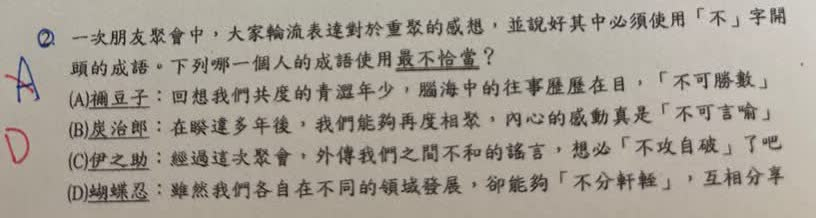

分享原卷｜第2題
完整原題
一次朋友聚會中，大家輪流表達對於重聚的感想，並說好其中必須使用「不」字開頭的成語。下列哪一個人的成語使用最不恰當？
(A) 禰豆子：回想我們共度的青澀年少，腦海中的往事歷歷在目，「不可勝數」
(B) 炭治郎：在睽違多年後，我們能夠再度相聚，內心的感動真是「不可言喻」
(C) 伊之助：經過這次聚會，外傳我們之間不和的謠言，想必「不攻自破」了吧
(D) 蝴蝶忍：雖然我們各自在不同的領域發展，卻能夠「不分軒輊」，互相分享
先想一想，再查看答案、解說與原圖
原卷作答：A（原卷紅筆訂正D）
正確答案：D，蝴蝶忍的「不分軒輊」與互相分享的語境不合。
逐項解析
| 選項與原句 | 判讀 | 句意與判斷理由 |
|---|---|---|
| (A) 禰豆子：回想我們共度的青澀年少，腦海中的往事歷歷在目，「不可勝數」 | 不選 | 往事很多而數不清，與不可勝數相合。 |
| (B) 炭治郎：在睽違多年後，我們能夠再度相聚，內心的感動真是「不可言喻」 | 不選 | 內心感動難以用言語表達，與不可言喻相合。 |
| (C) 伊之助：經過這次聚會，外傳我們之間不和的謠言，想必「不攻自破」了吧 | 不選 | 實際重聚使不和謠言自然瓦解，與不攻自破相合。 |
| (D) 蝴蝶忍：雖然我們各自在不同的領域發展，卻能夠「不分軒輊」，互相分享 | 應選 | 不分軒輊指實力難分高下；此處要說朋友不分彼此，並非比較優劣。 |
詳細說明與解題步驟
【逐項把成語放回語境】
A不可勝數：多得數不清，勝在此讀ㄕㄥ，指盡。年少往事很多，可以用此語形容；歷歷在目表示記憶清晰，並不與數量多相衝突。
B不可言喻：難以用言語說明，適合形容久別重逢、難以言表的感動。
C不攻自破：不用攻擊便自行瓦解；朋友實際重聚，能讓不和謠言自行失去說服力，用法恰當。
D不分軒輊：指高下相當、難分優劣，著重比較實力或成就。句中各自在不同領域發展、互相分享，重點是朋友之間不分彼此，並不是比較誰強誰弱，因此不合語意，應選D。
可以在解釋時以不分彼此說明原句想表達的意思；原題選項仍保留不分軒輊，不先替題目改字。
核對註記：已依原卷或完整文字核對並獨立解題；對應教材課次未確認，歸綜合。
原圖（僅本題）
